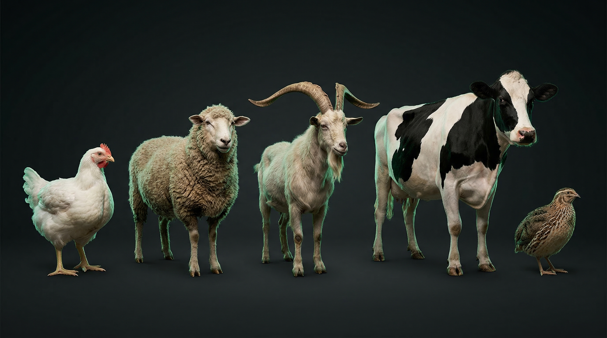
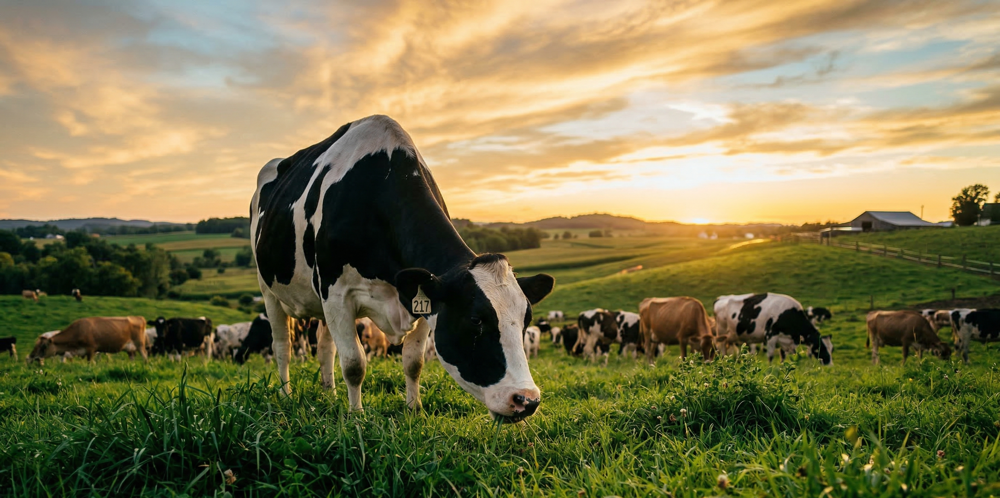
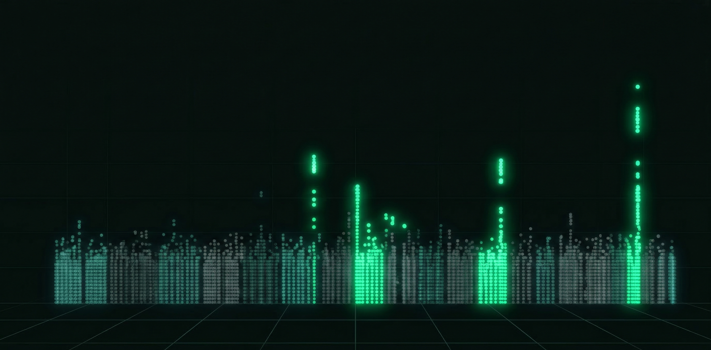
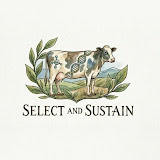

Breeding Climate-Smart Livestock | Through Genomics
PhD Student · Animal & Dairy Sciences · UW–Madison
I grew up around livestock. Our family had sheep, cattle, and chickens in rural Türkiye, and I spent years as a shepherd before I ever touched a textbook on genetics.
During my undergraduate years, I started working part-time at a university research farm. What began as a way to support myself became the turning point: surrounded by breeding trials and nutrition studies, I realized that genetics was the key. The one lever that could permanently improve animal performance, welfare, and environmental impact.
That conviction took me from Akdeniz University to Aarhus University in Denmark, then to Michigan State, and now to UW–Madison, where I pursue my PhD with Dr. Francisco Peñagaricano on genomic prediction in dairy cattle. Along the way, I gained industry perspective at Cobb-Vantress (Tyson Foods) and ABS Global (Genus plc).
My work spans cattle, sheep, goats, chickens, and quail. The principles of population genomics transcend species.

I believe genomics can help us raise livestock with less environmental footprint. Less methane, better genetics, a more sustainable world.

From individual genomes to global sustainability
Building prediction models for complex livestock traits using genome-wide SNP data. Helping breeders make smarter decisions before an animal is even born.
Identifying genetic variants behind growth, milk production, and adaptation. From Anatolian goats to commercial poultry lines.
Mapping genetic diversity and selection footprints in native livestock breeds to guide conservation of irreplaceable genetic resources.
Investigating how genomic tools can reduce methane emissions in dairy cattle. Helping producers meet sustainability goals without sacrificing performance.
From a shepherd's field to genomics research
ABS Global (Genus plc) · DeForest, WI
University of Wisconsin–Madison
Genomic prediction and quantitative genetics in dairy cattle with Dr. Francisco Peñagaricano.
Cobb-Vantress (Tyson Foods) · Siloam Springs, AR
GWAS with Near-Infrared datasets for genetic marker identification in poultry.
Michigan State University · East Lansing, MI
Genomic prediction methodologies for livestock traits with Dr. Cedric Gondro.
Aarhus University · Denmark
Bioinformatics of ddRADseq data at the Center for Quantitative Genetics and Genomics.
Akdeniz University · Antalya, Türkiye
Akdeniz University · Antalya, Türkiye
Günaydın Hayvancılık · Balıkesir, Türkiye
Three months hands-on experience at a commercial dairy operation.

19 peer-reviewed articles · 123+ citations · h-index 7
Evaluation of ddRADseq data for SNP and InDel discovery in Pirlak sheep.
Small Ruminant Research, 107707
Candidate genes related to growth and milk production in three Anatolian goats revealed by GWAS.
Mammalian Genome, 37(1), 30
1 citationUnveiling genomic diversity and population structure in three Anatolian goats at genome-wide level.
Small Ruminant Research, 252, 107570
2 citationsGenome-wide comparative analysis of variability and population structure between autochthonous Turkish chicken breeds and commercial hybrid lines.
Poultry Science, 104(7), 105193
3 citationsRe-visiting genetic background of some native Turkish sheep populations: Bottleneck and migration.
Tropical Animal Health and Production, 57(6), 273
Genome-wide scanning for selection signatures in two autochthonous Anatolian chicken breeds.
British Poultry Science, 1–10
Associations of VLDLR gene polymorphism (intron 11, 392C>T) with egg production and weight in Japanese quails.
Journal of Animal Production, 66(1), 25–31
Genome-wide discovery of selection signatures in four Anatolian sheep breeds revealed by ddRADseq.
Scientific Reports, 14, 20518
9 citationsHSP90AB1 variations in four cattle breeds raised in Türkiye.
Yuzuncu Yil University Journal of Agricultural Sciences, 34(4), 649–655
HSP90AA1 gene polymorphism in Hamdani sheep.
V. International Applied Statistics Congress, 949–953
Genome-wide screening for selection signatures in native and cosmopolitan cattle breeds reared in Türkiye.
Animal Genetics, 54(6), 721–730
15 citationsGenome-wide genetic variation and population structure of native and cosmopolitan cattle breeds reared in Türkiye.
Animal Biotechnology, 34(8), 3877–3886
12 citationsMitochondrial DNA diversity of D-loop region in three native Turkish cattle breeds.
Archives Animal Breeding, 66(1), 31–40
8 citationsInvestigation of some autosomal recessive inherited diseases (BLAD, DUMPS, CVM, and FXID) in Holstein cattle.
Livestock Studies, 63(2), 87–91
1 citationGenetic variations in HSP90AA1 gene region in Pirlak sheep breed.
Journal of Animal Production, 64(1), 12–16
4 citationsInDel variations of PRL and GHR genes associated with litter size in Pirlak sheep breed.
Tekirdag Journal of Agricultural Faculty, 20(4), 890–897
4 citationsDetection of genetic diversity in cattle by microsatellite and SNP markers – A review.
Animal Science Papers and Reports, 40(4), 375–392
12 citationsConservation and selection of genes related to environmental adaptation in native small ruminant breeds: A review.
Ruminants, 2(2), 255–270
36 citationsDirect and indirect contributions of molecular genetics to farm animal welfare: A review.
Animal Health Research Reviews, 22(2), 177–186
16 citationsMy science communication channel on livestock genetics and sustainability

SELECT & SUSTAINI started this channel because the science I read every day deserves a bigger audience. Each episode takes one concept from livestock genetics or methane research and explains it in 60 seconds.
Open to collaborations, discussions, and opportunities